Published: 2022-09-28
Original link: https://www.cnphotos.net/academy/show-95.html
Summer fades and autumn arrives, a little bleak. As the saying goes, the autumn air is crisp and clear. For photographers, this is the most beautiful time of year, especially in the north. It is time to take out the camera and go out. How do you capture the feeling of autumn? What should you watch for in autumn photography? Let us look at these autumn photography tips.
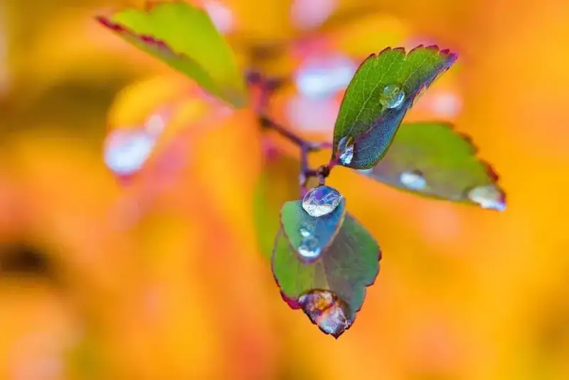
A craftsman who wants to do good work must first sharpen his tools. To shoot red leaves well, first picture how you want to shoot, then prepare your tools. The tools below each have a different use. Wide-angle lens: shoot the whole environment and the whole red-leaf forest. It also suits portraits, to place a person within the red leaves. Macro lens: shoot close-ups of red leaves, and it suits leaves that are not too high, or fallen leaves on the ground. Telephoto lens: good for both portraits and red leaves, and it makes bokeh easier. It is especially handy when the red leaves grow too high. A telephoto can also do a job close to macro. Tripod or monopod: when shooting macro the safe shutter speed is slower, or the light is low and you need a longer exposure. Bring one if you do not mind the weight.
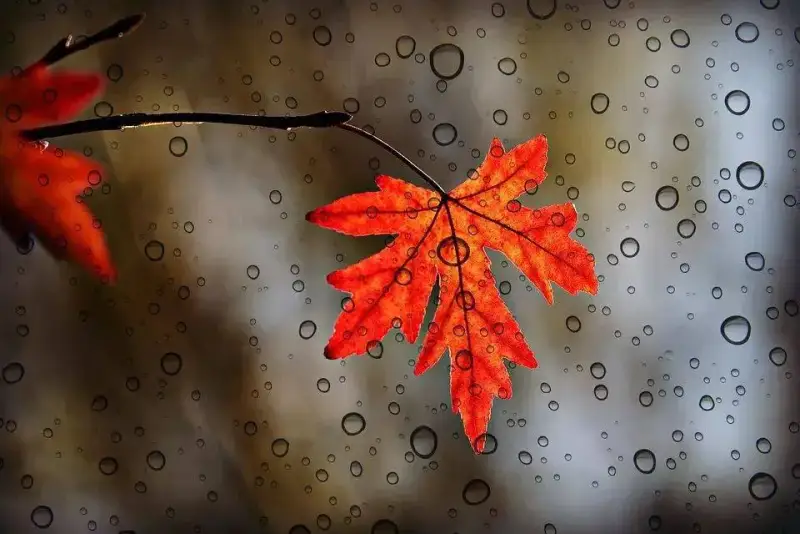
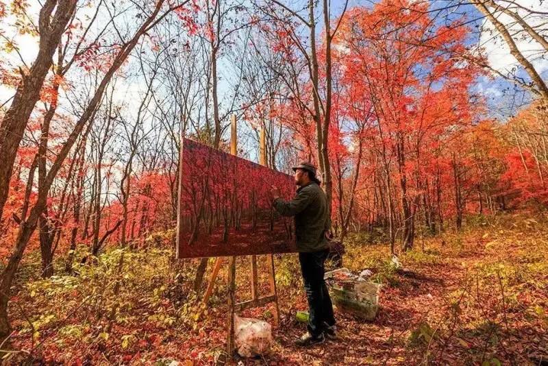
Early morning, from around sunrise until 11 am, is a good time to shoot. If you want front light, the best time is after 4 pm, when the sun starts to set and the light takes on a warmer tone. Together with the autumn leaf colors, this makes the photos bright and vivid.
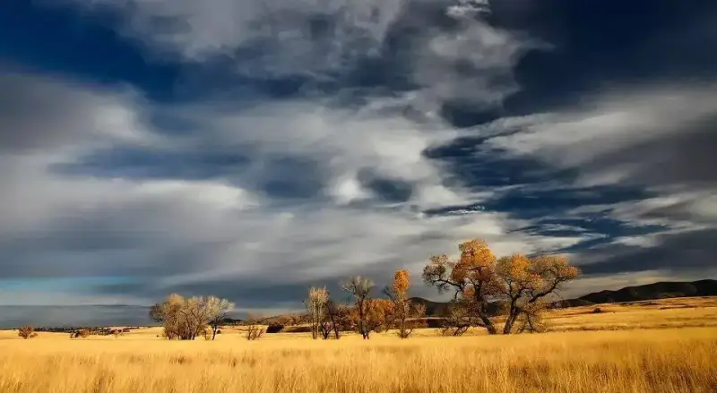
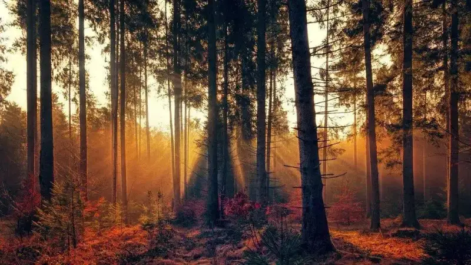
Good spots for red leaves will likely be crowded, so watch your composition and angle, and keep out things you do not want in the frame. Learn to look at the subject and the surroundings through the viewfinder, and choose the best spot for the composition you want. When you frame and compose, note the following points:
Before you shoot, decide your idea as a painter would. Think about what the photo should show and where to place the subject. Then use light, color, lines, and shape to make the subject stand out.
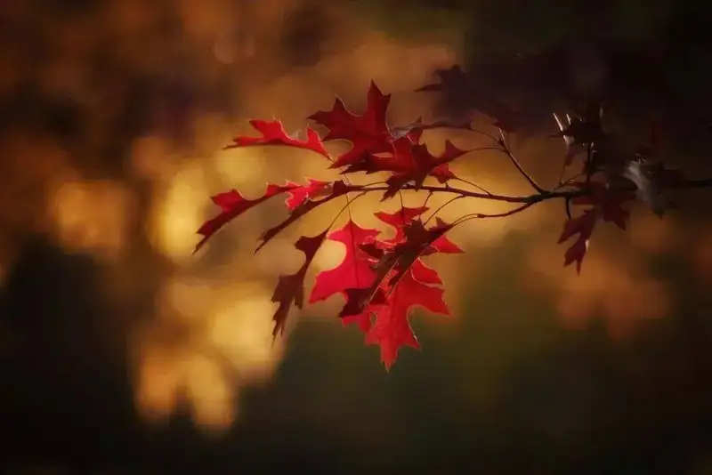
A well-balanced photo gives a sense of stability and harmony. Balance comes in two types, symmetric and asymmetric. Asymmetric composition often feels more dynamic than symmetric. The size, shape, weight, direction, and color of the subject all affect visual balance.
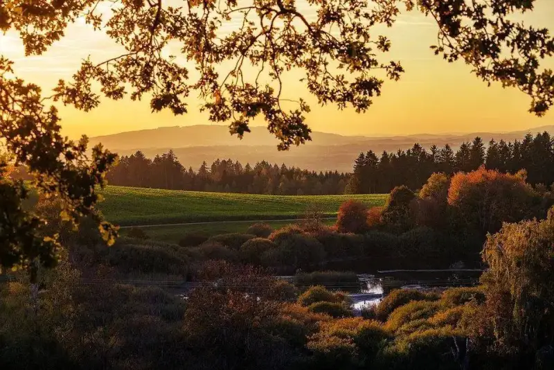
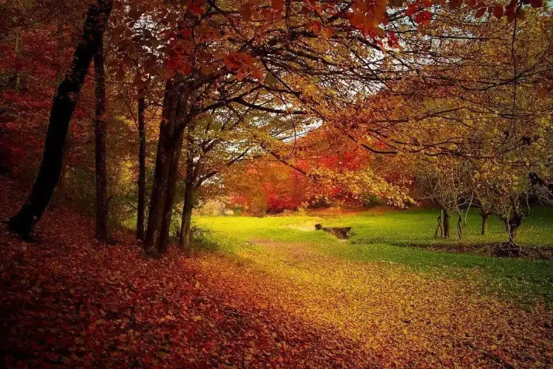
In composition, rhythm and melody matter. When subjects repeat in the same or similar way in an ordered pattern, rhythm forms. When that rhythm shows movement such as flowing lines, harmony, and rise and fall, it becomes melody, and the image feels graceful and smooth. Rhythm and melody deepen the theme, and they live in the contrast of lines, color, light, and tone.
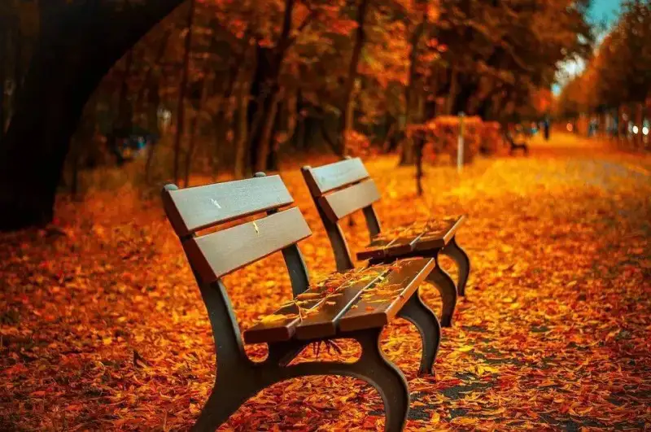
Photography is really subtraction. Remove everything in the frame that is not about the subject. The simpler, the better. Beginners should start with simple composition. For example, a single leaf is not beautiful on its own, but in a setting where the leaf color and the mood work together, the frame becomes poetic.
In landscape photography, the sky is important. Often the sky is the main part of the composition, and the beauty of nature can be stunning. A good photographer watches the weather and learns its patterns. For example, the sunset glow after rain is the most beautiful, and if the sun comes out after rain, you may see a rainbow.
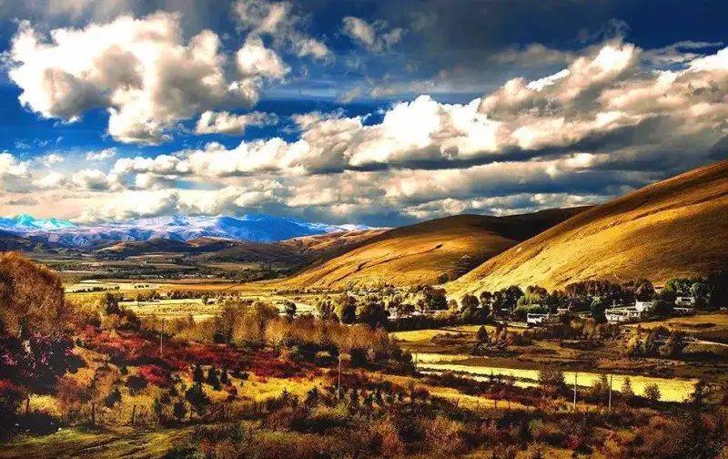
From the subject alone, it is sometimes hard to judge real size. With a familiar reference point, you can sense the size by comparison. Such a reference point is often used to show the grandeur and scale of nature.
In autumn shooting, mood matters most. If you add water, the image improves even more. Use a wide aperture to blur the foreground into bokeh, and keep the reflection on the water clear. The effect is dreamy and evocative. A reflection in the foreground adds a lot to the image.
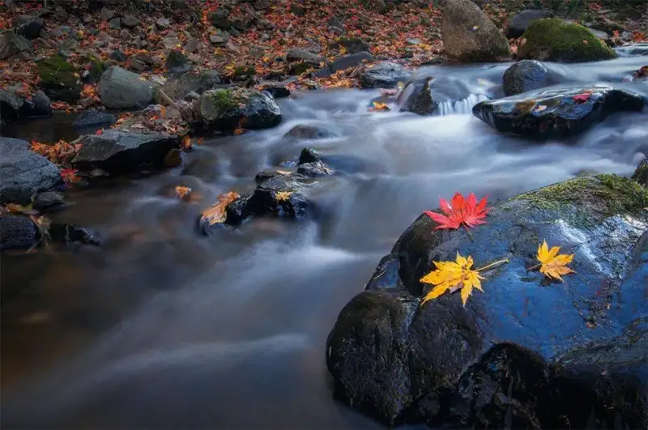
Whether a photo succeeds depends a lot on how you use light. Light directly affects color and tone, and shapes and lines. So at the same spot, the same subject in different light gives different mood and feeling. To show light and shadow, spot metering with backlight works especially well. In backlight, leaves look translucent, with clear veins, strong texture, and lovely patches of light. Note this: choose the spot meter point carefully, and use exposure compensation to balance the brightness. Underexpose rather than overexpose, so you leave room for post-processing.
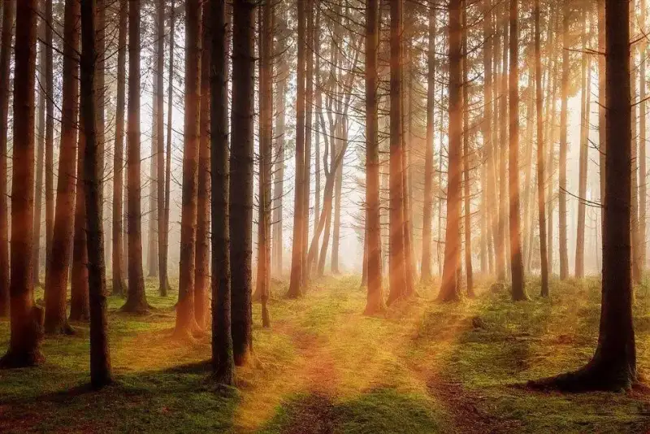
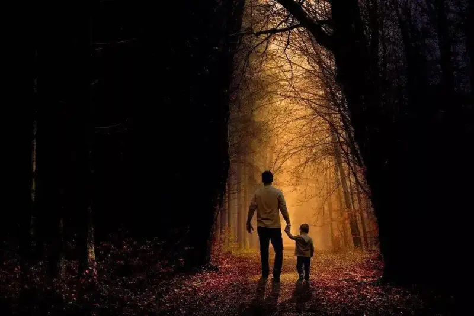
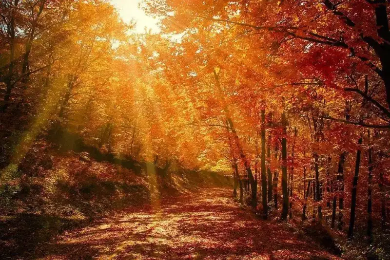
Autumn is the best time for fog. It is fresh and soft, like an ink painting. In open flat fields the fog is steady, so you can compose at leisure. In the hills the fog drifts and changes, so you must seize the moment and press the shutter when the subject is half hidden.
Foggy light is diffused, so form and color are hard to show. The near view is clear, and distant objects grow softer. When choosing a subject, pick something with a clear outline and contrast between light and dark tones. Manage the foreground and background to show depth.
For fog, raise the exposure by about 1 EV. If you want a high-key landscape, raise it by 1.5 to 2 EV. Fog is mostly diffused light, but if you watch the sun you can still tell front light from back light. Front light tends to look flat, while back light in fog adds depth.
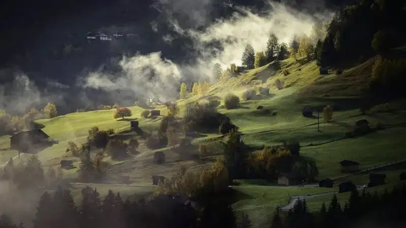
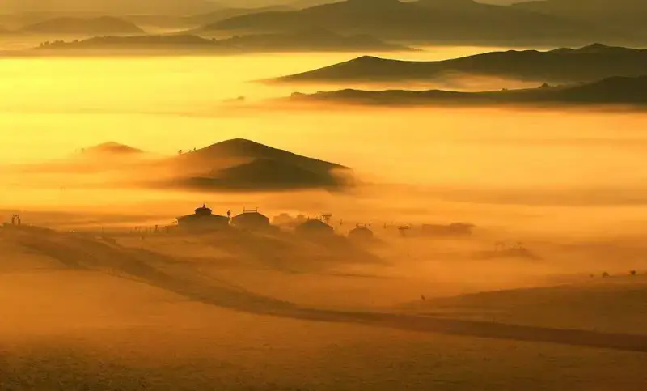
· Do not shoot in direct sunlight
Bright sunlight lights the scene well, makes it lively and colorful, and lets you use a fast shutter and small aperture. But strong sun causes problems. Its glare makes people squint, and high direct light casts harsh shadows on the face. So outdoors, let the sun hit the subject from the side, and do not face the person straight into the sun.
· Do not place a subject near colored surroundings
In bright light, reflections off objects grow stronger. In this case, keep the person away from brightly colored things, such as a freshly painted wall or a large awning. Otherwise their color reflects onto the person and casts a color cast.
· Do not photograph a person on concrete under overhead light
Concrete is smooth and light colored, so it reflects light strongly. This foot light from below often looks harsh and creepy. Avoid it.
· Do not stand by a tree when shooting
Light and shadow go together. The stronger the light, the deeper the shadow. When a person stands by a tree, sunlight often casts leaf shadows onto them and their face, making a dappled, unflattering look.